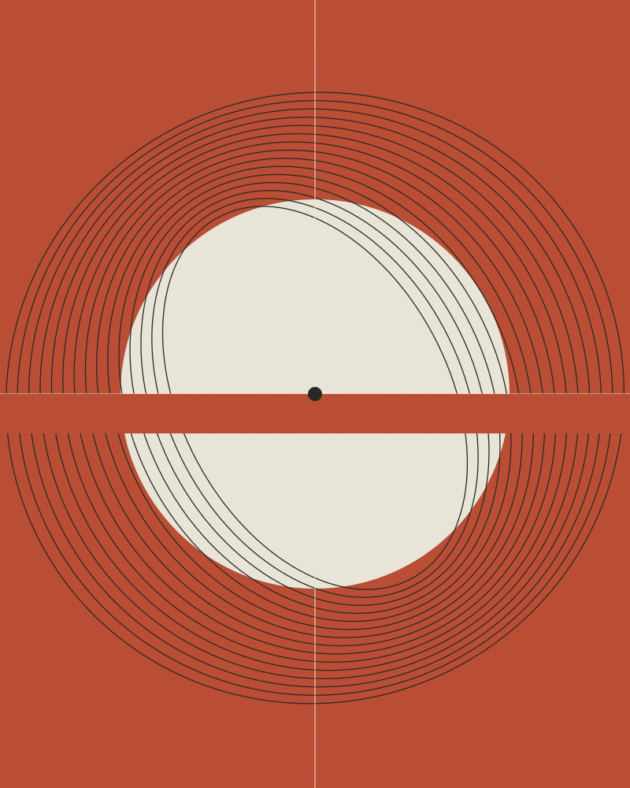
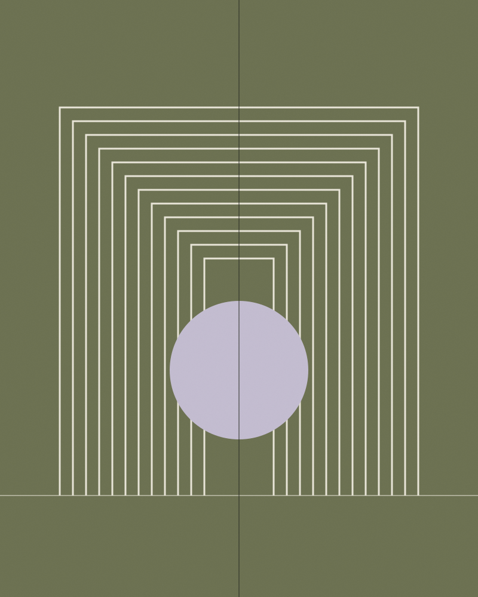
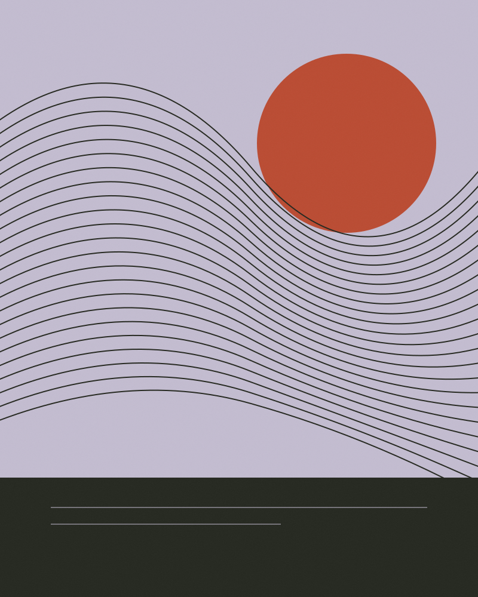

Mara Vey / 2026The Meridian EngineThe Meridian Archive
Speculative fiction
Speculative fiction
The Meridian Engine
A machine that remembers the future. A woman determined to forget it.
Stories for the space between what we know and what we cannot yet imagine.
Explore the archive
A machine that remembers the future. A woman determined to forget it.

Seven cities. One sun. No place left to hide.

On this coast, the sea returns everything except what you lost.
“I write about impossible places to ask possible questions. About who we become when the world stops being familiar.”